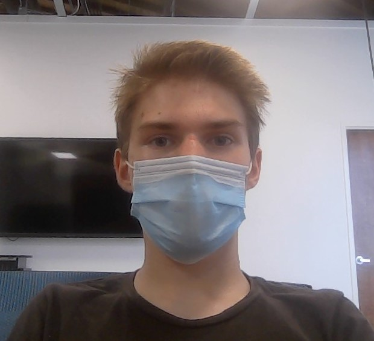

Tony Hawk is the G.O.A.T

By: Jacen Barefoot

Anthony Frank Hawk (born May 12, 1968), nicknamed Birdman, is an American professional skateboarder, entrepreneur, and the owner of the skateboard company Birdhouse. He completed the first documented "900" skateboarding trick in 1999, licensed a video game series named after him published by Activision that same year, and is a pioneer of modern vertical skateboarding. He retired from competing professionally in 2003 and is regarded as one of the most influential skateboarders of all time.